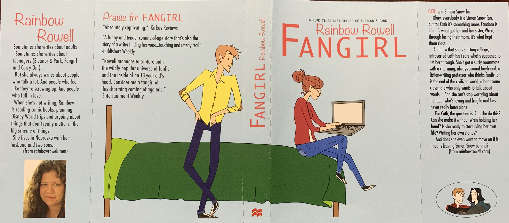

In SCS 374, Software Engineering for Mobile Systems, we were assigned a final project at the very beginning of the semester. This was a group project to design and create our own application from scratch. I inadvertently became the project manager – organizing tasks and figuring out which member would be the best for which task. I made it a point to communicate with my group members and see what could get done each week. I also made sure that they liked what they were doing – most of the time they volunteered for a certain task. Between me and another student, we shared responsibility of making sure things were done and we were on schedule.
In SAR 109, Graphic Design I, we had an assignment to recreate a book cover for our favorite novel using Adobe Illustrator. I was able to take my own interpretation of the novel to recreate the cover, while keeping the main concept of the story overall.
